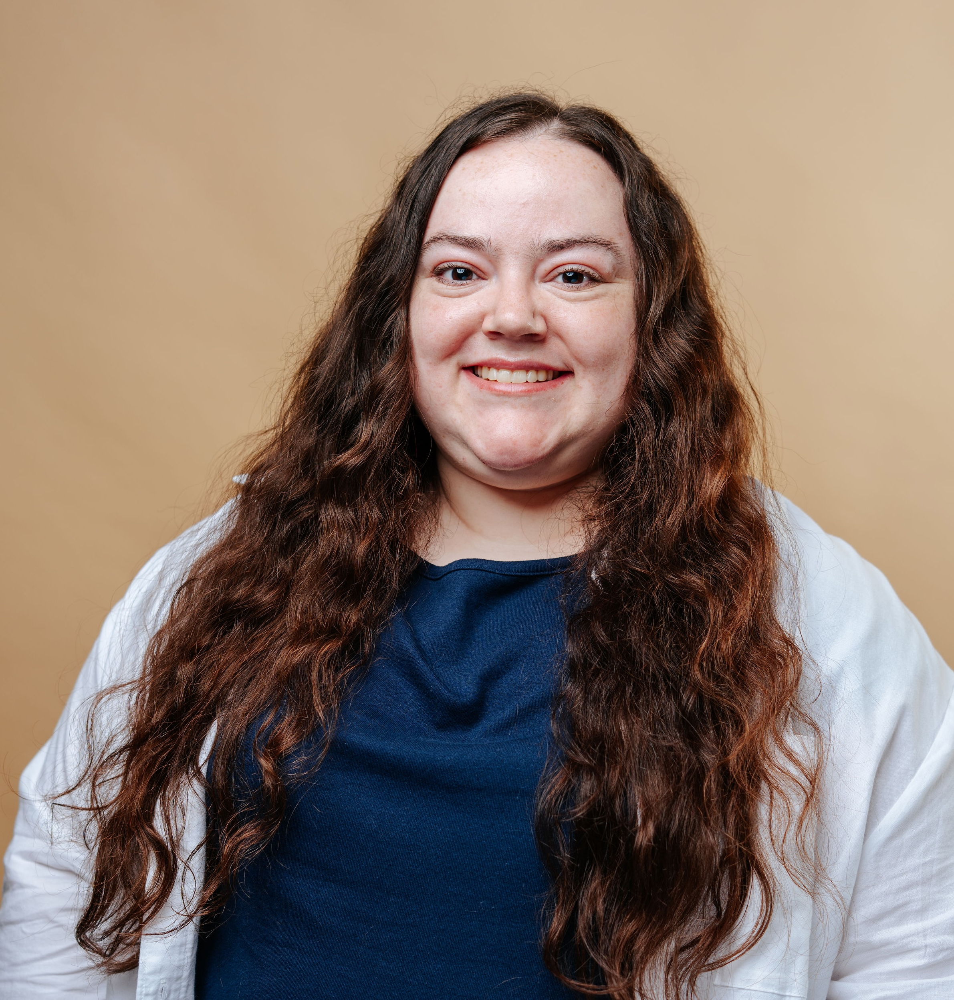

Sarah Whitney LPC
Licensed Professional Councilor
About Me
I believe in developing a therapeutic relationship with my clients where meaningful change is possible. This means creating a safe and accepting space where clients feel supported and understood. Working with the client, I integrate positive psychology, strength-based therapy, and Dialectical Behavioral Therapy (DBT) interventions to help individuals work towards their goals, embrace their strengths, and navigate life’s hardships with greater understanding and useful tools. I have worked with individuals from diverse backgrounds, ages, and presenting concerns, however, I have the most experience supporting individuals with anxiety, depression, grief, and caregiver burnout. I recently graduated with my Masters of Counseling Psychology at University of Kansas. I currently have a LPC license and am working towards independent licensure. I am also currently under the supervision of Claire Wimer, LCPC. I have worked in private practice over the past year as a clinical intern and also have experience as a student clinician in the KU Hope Through Strengths Clinic, a positive psychology clinic that provides free therapy to individuals across Kansas. I grew up in Mid-Missouri and now live in Kansas, where I’ve found a supportive community and peaceful home. In my free time, I enjoy reading, listening to music, engaging in self-care and spending time with my golden retriever. I am currently accepting new clients for individual therapy. If you have any questions or you would like to schedule an appointment you can view my availability and request an appointment online or email me at sarah@whitneycounselingks.com.